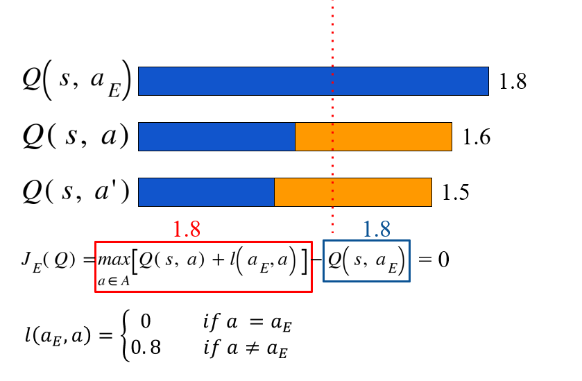
supervised large margin classification loss
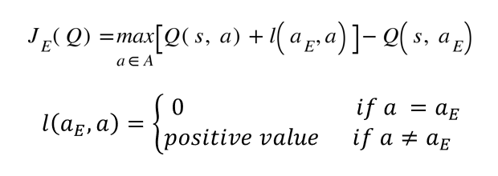
Overall loss:
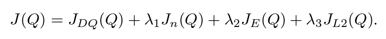
n-step TD loss helps propagate the value of expert trajectories to all early states, leading to better pre-training. The first two losses can ensure that the neural network value function estimates learned during pre-training satisfy the Bellman equation and can serve as a starting point for TD learning.
How does it determine the proportion of demonstration data and self-generated data to sample in a batch? 10%? 50%? It uses PER!
Prioritized Experience Replay (PER)
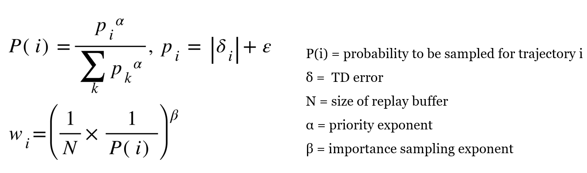
$\epsilon_a,\epsilon_d$ are added to the priorities of the agent and demonstration transitions
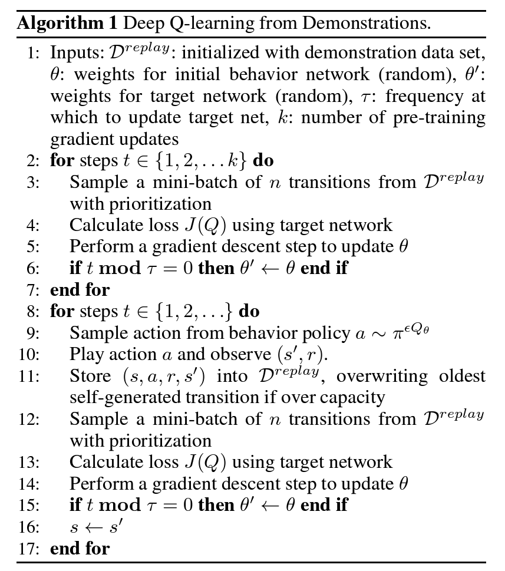
| algorithm | with/without demonstration | with/without online interaction | Notes |
| --- | --- | --- | --- |
| DQfD | Yes | Yes | |
| PDD DQN | No | Yes | include n-step return |
| Supervised imitation | Yes | No | performed a supervised classification of the demonstrator’s actions using
a **cross-entropy loss**, with **the same network architecture** and
**L2 regularization** used by DQfD |
- NN architecture
- Dueling state-advantage convolutional network architecture
- Parameter tuning
- tuning for all the algorithms on 6 games and using the same parameters for the entire set of games

Outperform
Scores for the 11 games where DQfD achieves higher scores than any previously published deep RL result using random no-op starts. Previous results take the best agent at its best iteration and evaluate it for 100 episodes. DQfD scores are the best 3 million step window averaged over four seeds, which is an average of 508 episodes.
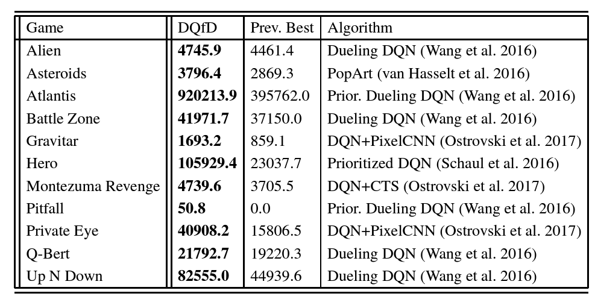
Demonstration scores vs DQfD vs PDD DQN
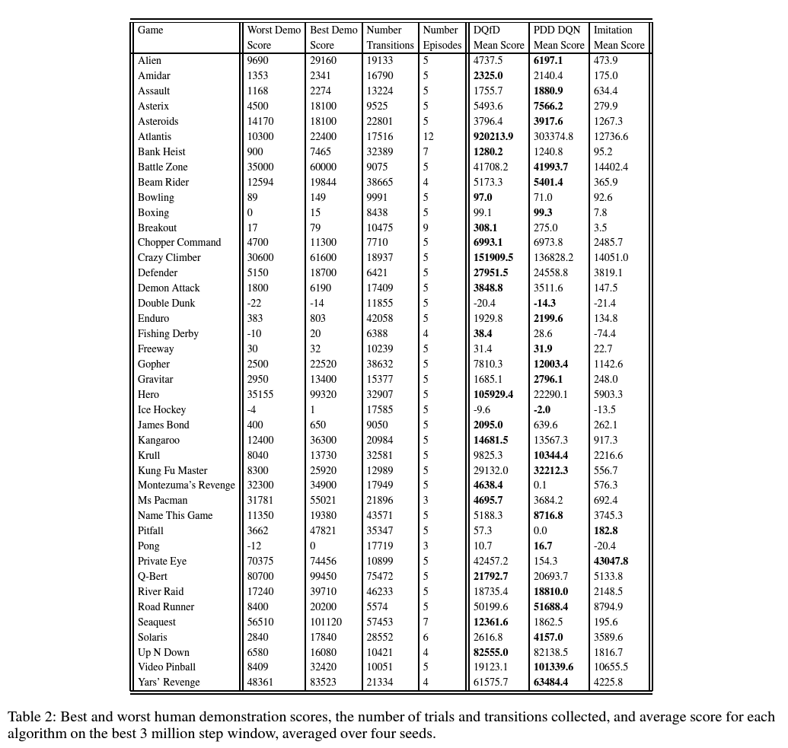
Learning curves
Results on the 42 Atari games, averaged over 4 trials.
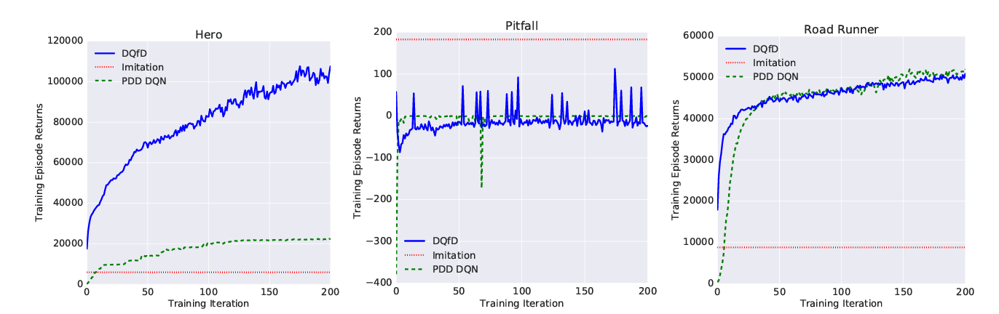
All env
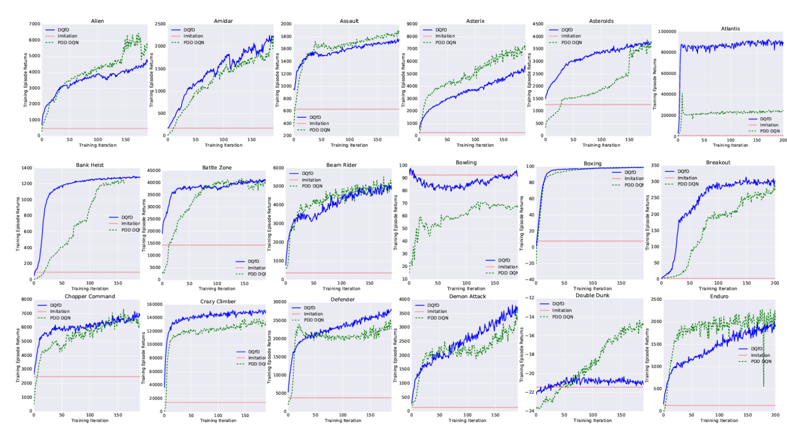
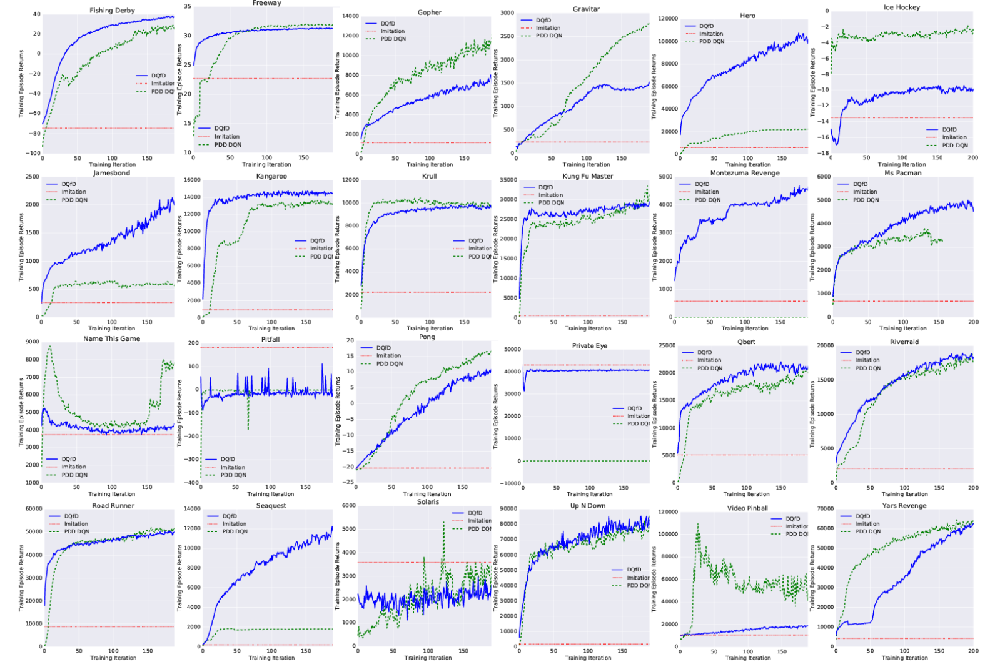
The authors or I observe the following:
Ablation: loss
Comparisons of DQfD with λ1 and λ2 set to 0 on two games where DQfD achieved state-of-the-art results: Montezuma's Revenge and Q-Bert.
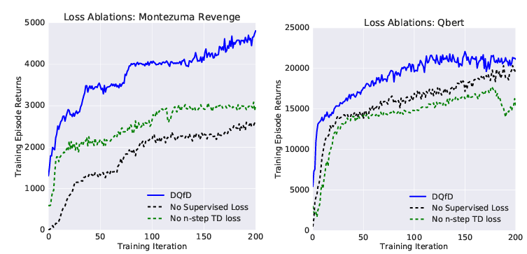
Vs other works
Compare DQfD with three related algorithms for leveraging demonstration data in DQN on two games where DQfD achieved state-of-the-art results: Montezuma's Revenge and Q-Bert.
Accelerated DQN with Expert Trajectories (ADET) (Lakshminarayanan, Ozair, and Bengio, 2016)
ADET is essentially DQfD with the large margin supervised loss replaced with a cross-entropy loss.
補充，這裡跟前面指到說 cross entropy loss, 那這到底要怎麼跟 Q net 結合？
ChatGPT 講解的 ADET cross entropy loss：
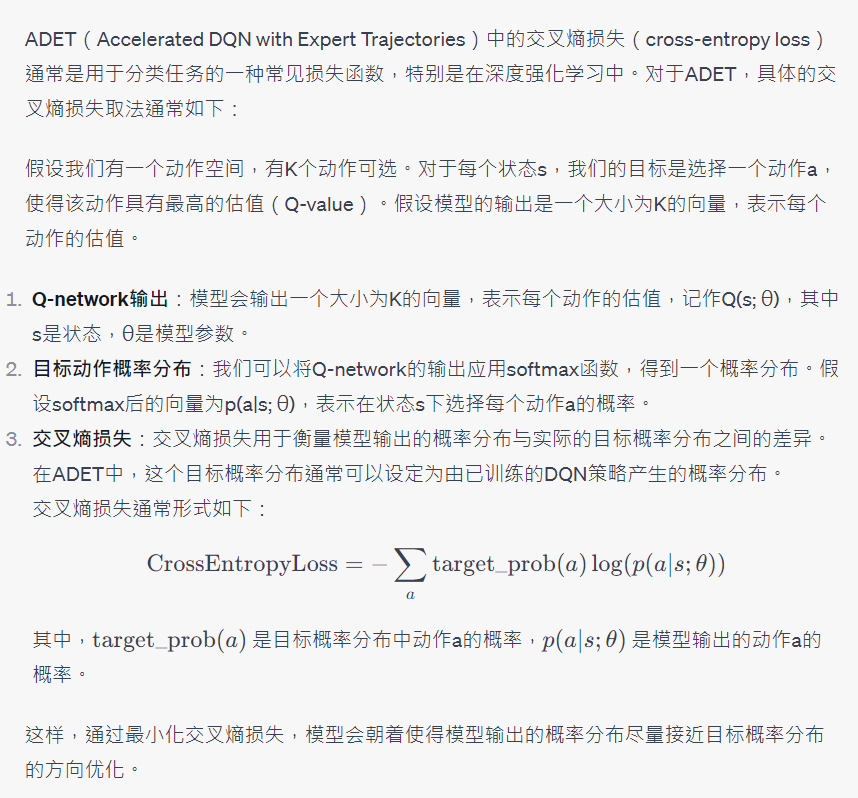

Demonstration Data Ratio in a Mini-batch
For the most difficult games like Pitfall and Montezuma's Revenge, the demonstration data is sampled more frequently over time. For most other games, the ratio converges to a near-constant level, which differs for each game.
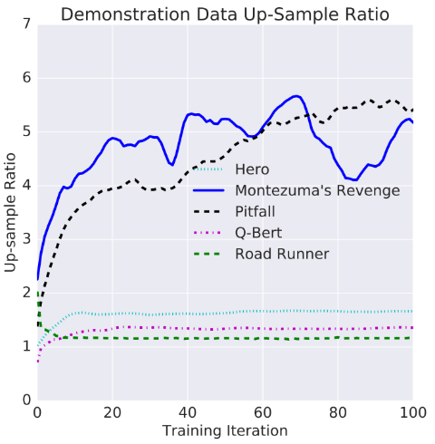
The Deep Q-Learning from Demonstrations (DQfD) algorithm introduces improvements to utilize demonstration data for accelerating training in deep reinforcement learning. It combines different loss functions to ensure that the neural network value function estimates satisfy the Bellman equation and imitate the actions of the demonstrator. DQfD outperforms previous deep reinforcement learning results using random no-op starts and achieves higher scores than any previously published deep RL result in 41 out of 42 Atari games. It shows promising results in terms of initial performance, learning curves, and leveraging demonstration data. The algorithm demonstrates the potential of utilizing prior demonstrations to enhance the training process and improve the performance of deep RL agents.